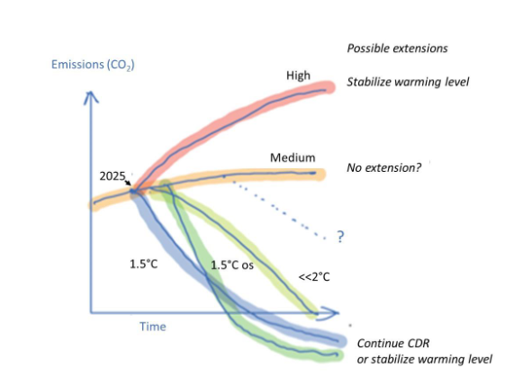
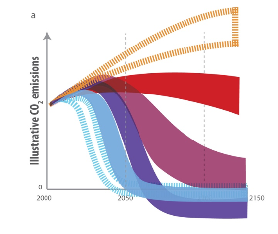
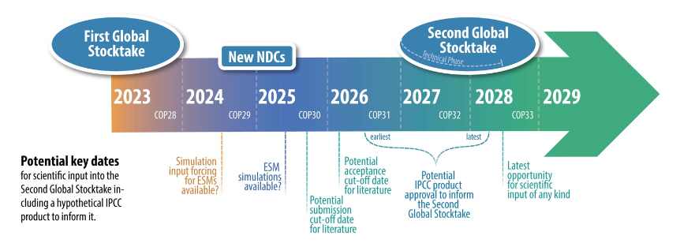
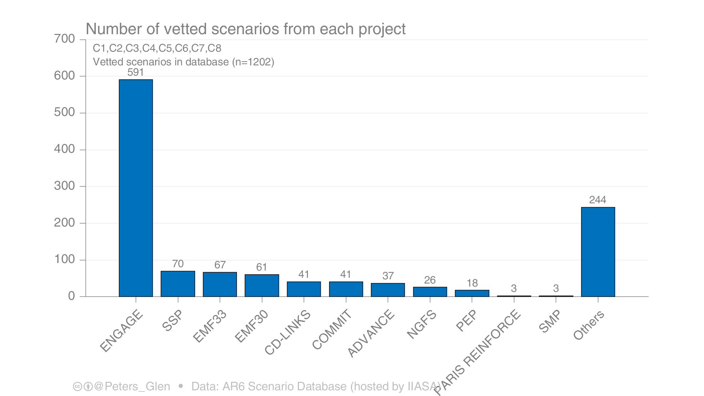

![]()


Last week a new paper and a new preprint on scenario creation and their assessment were published. First, a group effort with 41 co-authors: A perspective on the next generation of Earth system model scenarios: towards representative emission pathways (REPs) (Meinshausen et al. 2023). It’s open for review comments in GMD. The social media comments I saw so far where quite mixed. Some were apparently seeing this as a community split and invited to join the ScenarioMIP process, while the paper itself presents itself as a contribution to the ScenarioMIP effort.
The initial June 2023 workshop discussions for the forthcoming ScenarioMIP protocol, at which this paper’s proposal was presented, also picks up some elements of this convergence of views (Figure 1 in van Vuuren et al., 2023).
(p. 25)
Further considerations beyond those outlined here may inform the ongoing efforts of pathway design as part of CMIP, including ScenarioMIP (van Vuuren et al., 2023) and/or other model intercomparison projects (MIPs). We hope that our perspective can serve as an input into a strategic approach for driving ESMs with policy-relevant futures in this critical and contribute to further community reflections 805 on the next generation of framing pathways that we think will greatly benefit from an open and inclusive discussion given the far-reaching consequences for climate science and policy stemming from the scenario design.
(p. 31/32)
Given that I started Polyclimate as a place to think about how (some parts of) climate science could be done more in the open and collaboratively I find these discussions quite fascinating and look forward to a future study which analyses the social and political processes behind the scenario development.
This paper has no official mandate. Doesn’t mean it’s not relevant but it’s not the CMIP endorsed activity.
Pierre Friedlingstein on Twitter
It’s often hard to get review comments1, but the naming of their proposed scenarios is definitely something that will lead to comments. Whether there are emissions pathways that can be ruled out is still up for debate.
“World Avoided” is a misleading name, which overstates progress in reducing emissions.
If RCP 8.5 was never plausible then it’s only a world avoided in scenario modelers’ imaginations.
Others were excited about both the “hypothetical” loss and damage scenario with emisssions reductions having started in 2015 and the high emissions scenarios.
These two parallels universes: I want to know EVERYTHING about them
There is a a lot of literature which tries to assign historical emissions responsibility and the loss and damage debate will certainly be important in the next climate negotiations.
I love the idea of a ‘what might have been’ scenario. So much of climate change has been politicians saying “Well, this all happened well before our tenure”, so it would be great to have something to point to and say “see how much less messed up it could have been if you’d done your jobs”.
An important question then is of course how such a hypothetical scenario would look. 5% emissions reductions from 2015? 10%?
Also interesting to note that a sketch in in the ScenarioMIP workshop report (Vuuren et al. 2023) has a question mark pathway in the area between ‘continued’ emissions and a below-2°C pathway, an area which is left empty in the REP sketch, see Figure 1. The selection, design and naming of scenarios has many implications and there is not much time if things are to be ready for the second Global Stocktake in 2028.

Given the discussions on timelines and cut-off dates Figure 2 for scenarios and their assessment feeding into the second Global Stocktake via a yet unknown AR7 product another paper published last week is also quite relevant: AR6 scenarios database: an assessment of current practices and future recommendations (Peters et al. 2023).
A critical assessment of the mitigation scenarios assessed in WG3 of the IPCC it calls for a “A new generation mitigation scenarios database” and for having the scenarios assessment be public during the assessment process instead of only after the final report publication.

From a description of the current process, an analysis of skewness in the distribution of submitted scenarios (dominated by a small number of models and projects, see Figure 3) it makes several proposals. Quoting from a thread on Twitter2:
- A more active community in shaping research questions (e.g., not within closed EU projects)
- Shifting towards open & peer-reviewed scenario protocols, to solicit more diverse feedback & submissions
- A focus on openness, transparency, inclusion
- A living scenario database (instead of closed until publication as in the IPCC). Annual publications, like @gcarbonproject , could routinely maintain, update, & assess the database.
- Encourage the community to assess the database, not let the IPCC authors do it alone
- A strong institutional foundation is important, but a diversity of voices representing users & different modelling approaches & paradigms is essentials
For the proposal of a living scenario database I believe the ingredients are already there. With the fantastic climate-assessment package Kikstra et al. (2022) have open-sourced the core climate assessment engine. A future living scenario database could built on this and be developed in the open on GitHub, along future improvements and updates to the assessment pipeline. With a total size of less than 350 MB for the global scenarios3 the database could fit well below into the recommended limits of a GitHub repository of 1GB so there might be no need to maintain an actual database. If needed it could also be split up into sub-projects.
Several approaches could be possible, for example submitting scenarios via Pull Requests to a central scenario DB repository, the assessment being handled by an automated pipeline using GitHub Actions writing back the results to the repository. A distributed, local approach might be another possibility, if the computing demands are to high to be handled by (free tier) GitHub Actions.
Scenario developers would then have to run the pipeline locally and submit not only their input data but also the harmonized emissions and climate assessment to a central repository database. This approach might even be better for scenario developers (or done locally before submission anyways) and avoid surprises like re-classification due to infilling and harmonization. For example, they might have thought they submitted a below 1.5 scenario, but filling in emissions not covered in their model could push it into an overshoot one. During submission via Pull Requests automated checks could be performed like they are done in the current submission portal. Ideally, the submitted scenarios would directly be rendered into visualizations and be explorable on a website. Archiving could happen through the Zenodo integration with GitHub, so there would always be a citable reference of the latest version.
Lots of possibilities and not much time. Leave your thoughts and comments below!